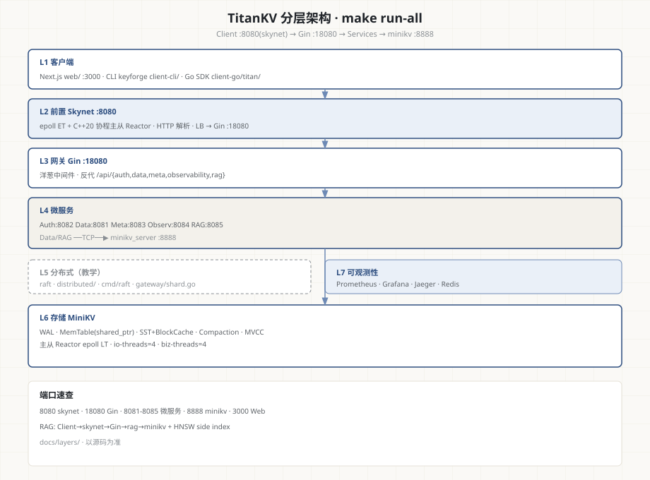

从一行 db.Put() 到前端实时刷新
每一层都讲得清楚。
TitanKV 是一个从存储引擎、网络库、网关、微服务到前端控制台完整重写的分布式键值平台。 本图谱把项目拆成八层，逐层梳理核心知识点、竖向调用链、崩溃恢复与设计取舍—— 不是堆技术名词，而是把每一行关键代码讲明白。

分层总览
请求自上而下穿过客户端、前置、网关、微服务，最终落到 C++ 存储引擎；可观测性组件横切所有层。点击任一卡片进入该层详细知识点、竖向调用链与设计分析。
Next.js 控制台 · Cobra CLI · Go SDK
→ L2 · 前置接入 / 网络库 Skynet (C++20)epoll ET · 协程化 IO · HTTP 解析 · 负载均衡
→ L3 · 网关层 API Gateway (Go + Gin)洋葱中间件链 · JWT/RBAC/APIKey · 反向代理
→ L4 · 微服务层 Services (Go)Auth / Data / Meta / Observability / RAG
→ L5 · 分布式层 Distributedhashicorp/raft · KVFSM · 一致性哈希分片
→ L6 · 存储引擎层 MiniKV (C++17 LSM-Tree)WAL · MemTable(跳表) · SSTable · Compaction · MVCC
→ L7 · 可观测性 Observability Stack横切所有层：Prometheus · Grafana · Jaeger · Redis
→ L8 · 前端控制台 Web Console (Next.js 14)App Router · 鉴权中间件 · SSE 流式 · Tailwind
→请求链路 · 竖向调用链
一条 PUT /api/data/kv/foo 从浏览器到 LSM-Tree 落盘的完整竖向路径。每一格对应上面某一层，进入该层详细页可看到更细的竖向调用链与崩溃恢复分析。
浏览器 · Next.js Console L1/L8
用户在 dashboard/data 页提交表单，apiFetch 读取 titan_token cookie 并注入 Authorization: Bearer。
关键：cookie 同源、middleware.ts 已在路由层校验过 token；401 时 apiFetch 自动清 cookie 跳 /login。
Skynet 前置 :8080 L2
C++20 协程 accept 循环接收连接，epoll ET 边沿触发，HTTP 增量状态机解析请求。
关键：skynet 不做 JWT/限流；Main accept + Sub 协程 epoll ET 读完 HTTP 后 LB 选 Gin :18080；支持 SSE 穿透（RAG chat）。
Gin Gateway :18080 · 洋葱中间件 L3
RequestID → Logger → Recover → RateLimit(Redis 令牌桶) → Auth(解 JWT/APIKey) → RBAC(检查 kv:put)。
关键：Auth 在 RBAC 之前（先识别身份再判权限）；alg:none 防御；jti 黑名单 Redis 故障时放行。
反向代理 · 注入身份头 L3
按 /api/data 前缀选目标，注入 X-User-ID / X-Role / X-Request-ID 后转发到 Data 服务 :8081。
关键：后端拿到身份无需再解 JWT；无匹配前缀返回 404。
Data 服务 :8081 · KV 写入 L4
Handler 接收请求，经 minikv_client 通过 MINIKV_ADDR 原生 TCP 协议把 KV 对发给 minikv_server。
关键：无 MINIKV_ADDR 时回退内存 store；规划中 gRPC/cgo 为后续增强。
RAG 路径（旁路）· services/rag :8085 L4
文档入库/检索/问答走 /api/rag/*，直连 minikv TCP；向量 HNSW 在 rag 进程 side index。
关键：RAG 热路径不经过 Data 服务；skynet/Gin 仍负责鉴权与 SSE。
minikv_server · 主从 Reactor L6
主 Reactor accept，按 round-robin 分发到 Sub Reactor (io_pool)，业务丢 biz_pool 执行 processRequest。
关键：IO 与业务解耦；biz_threads=0 时在 IO 线程内同步处理。
DBImpl::put · Group Commit L6
写线程组队（≤32 条，超时 500μs），leader 批量追加 WAL 并 fsync，follower 等待 group_cv_。
关键：WAL fsync 返回前崩溃 → 这条写入丢失但一致；Group Commit 摊销 fsync 开销。
MemTable::put · SkipList 插入 L6
写锁下插入跳表（kMaxLevel=32，randomLevel 0.5 概率），InternalKey = user_key + trailer(seq+type)。
关键：MemTable 超过 write_buffer_size → 冻结入 immutable_list_，触发后台 flush。
后台 flush 线程 · 刷盘 SSTable L6
flush_thread_ 从 flush_queue_ 取出，SkipList 扫描 → SSTableBuilder → Version::addLevelFile(L0) → unlink 旧 WAL。
关键：写路径不等待 SSTable 构建；flush 失败时 immutable 仍可见，重试。
Compaction · L0 → L1 合并 L6
独立后台线程 compactionLoop，L0 文件数 ≥ l0_trigger 触发，mergeLevelFiles 去重 + 清 tombstone。
关键：合并到更深一层才安全清 tombstone；失败下轮重试；Manifest 记录版本。
技术栈与构建入口
| 层 | 语言 / 框架 | 关键目录 | 构建 / 运行 |
|---|---|---|---|
| 客户端 | Next.js 14 · Cobra · Go SDK | web/ client-cli/ client-go/titan/ | make web-dev |
| 前置 / 网络库 | C++20 协程 · epoll ET | skynet/ | cmake --build build |
| 网关 | Go 1.23 · Gin | gateway/ | make run-gateway |
| 微服务 | Go 1.23 | services/{auth,data,meta,observability,rag}/ | make run-all |
| 分布式 | Go · hashicorp/raft | distributed/ | 教学单节点 |
| 存储引擎 | C++17 LSM-Tree | minikv/src/core/ | ctest --test-dir build |
| 可观测性 | Prometheus / Grafana / Jaeger / Redis | deploy/dev/ pkg/metrics/ | make docker-up |
| 存储 TCP | C++17 | minikv_server | :8888 |
| 统一入口 | — | Makefile | make run-all → skynet :8080 |
设计分析速览
每一层详细页都含「设计深度分析」章节，覆盖崩溃恢复场景、设计取舍、优缺点与优化方案。下面是几个高频追问的速览：
watchOnce 避免重复通知，协程化让 IO 代码线性可读；LT 模式需手动管理 level 触发易忙轮询。代价是 ET 必须一次读完，skynet 用 readExact/readUntil 兜底。详见 网络库设计分析。
项目状态
| Phase | 内容 | 状态 |
|---|---|---|
| 0 | 仓库重构 | ✅ done |
| 1 | C++ 存储引擎（WAL/MemTable/SST/Compaction/MVCC） | ✅ done |
| 2 | 原生 TCP 接 minikv → Go Data（gRPC 仍规划） | ✅ MVP done |
| 3 | Go 网关 + Auth（JWT/RBAC/APIKey） | ✅ MVP done |
| 4 | Go data / meta / observability 服务 | ✅ MVP done |
| 5 | Raft 教学实验 + gateway/shard 分片辅助 | ✅ teaching MVP |
| 6 | Next.js 控制台（含 RAG/Cluster 页） | ✅ MVP done |
| 6.5 | RAG 服务（HNSW + SSE chat） | ✅ MVP done |
| 7 | K8s + CI/CD 全栈 | ⏳ planned |
| 8 | CLI keyforge MVP + 多语言 SDK | ✅ CLI MVP / SDK planned |